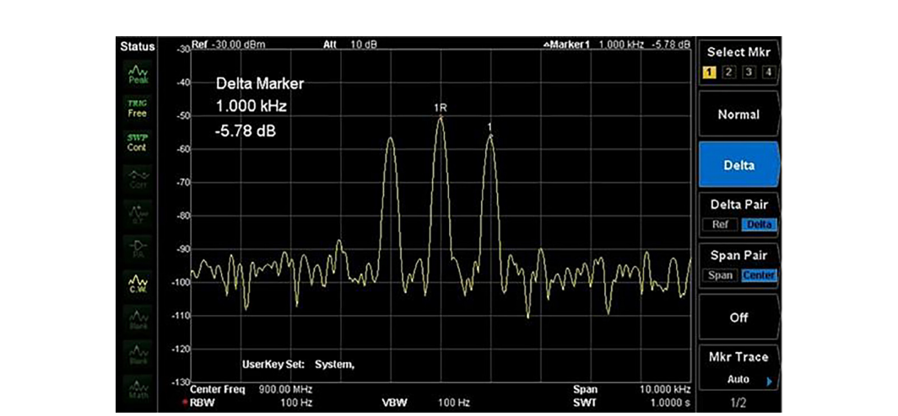
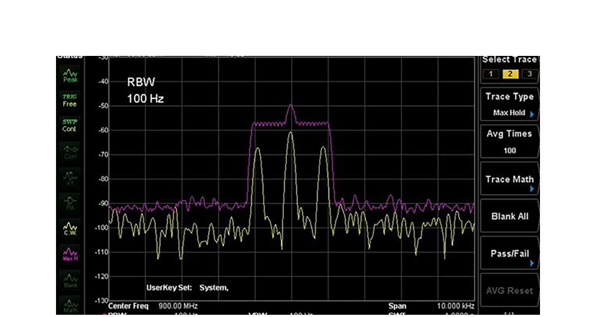
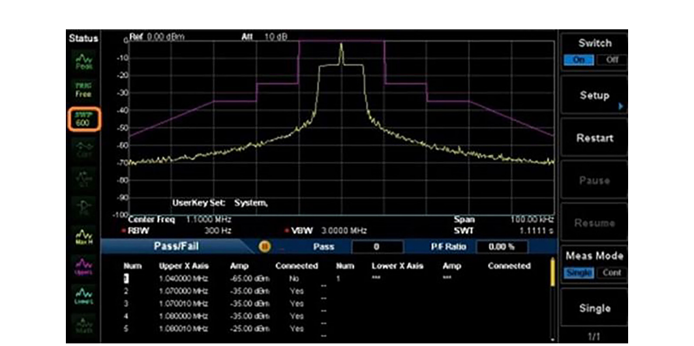
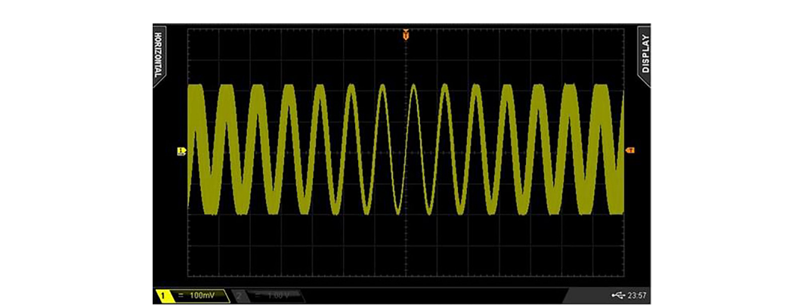
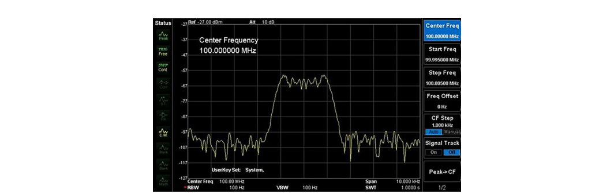
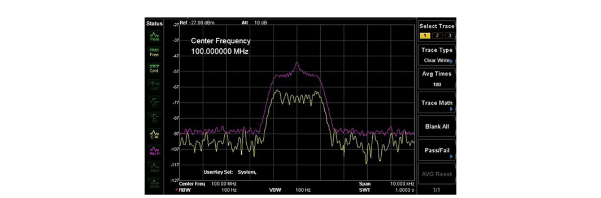
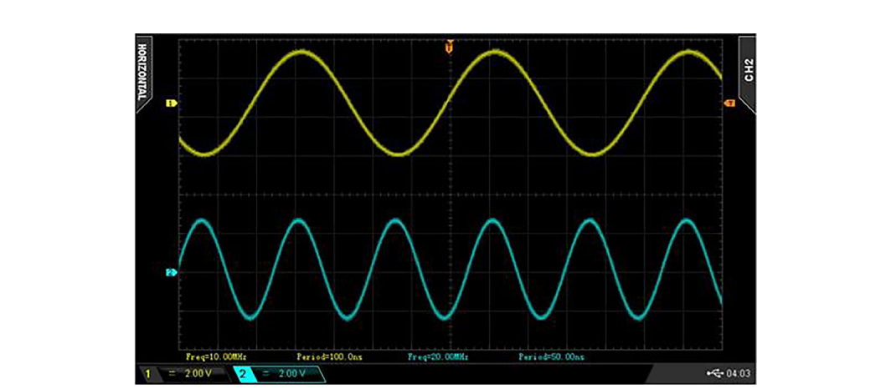
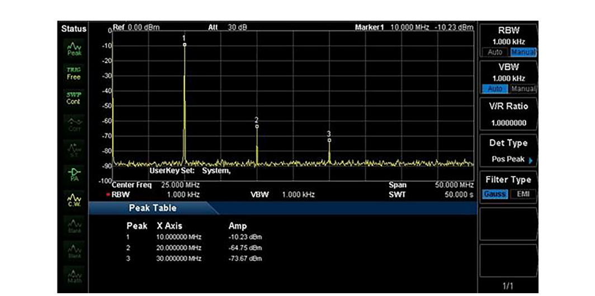
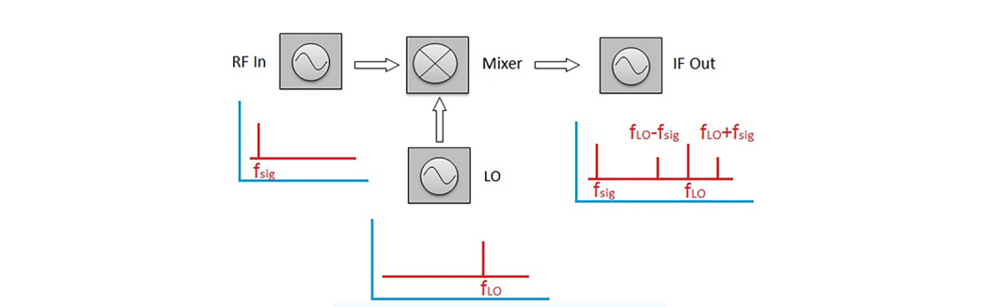

An RF transmitter is any device that intentionally sources a signal into the radio frequency band of the electromagnetic spectrum. Its job sounds simple. Create a signal with the right power, the right frequency, and the right encoding, then deliver it to a receiver that can read it. Doing that job reliably, and proving you did it, is where the work lives.
Most transmitters are wireless. AM and FM broadcast stations, Bluetooth radios, Wi-Fi access points, and cellular base stations all push energy into the air and rely on a distant receiver to recover the message. Some transmitters work over wire instead. Cable television (CATV) is the most familiar wired RF system, carrying hundreds of channels of modulated RF down a coaxial line. Wired or wireless, the testing principles are the same, and this chapter walks through them: the common tests that apply to every transmitter, the specific procedures for AM and FM, the hunt for harmonics and spurs, and the modern digital metrics that dominate today's wireless standards.
Whether a transmitter sends its signal through the air or down a cable, the core requirements do not change. The transmitted signal must carry the proper amplitude in the proper frequency band so the intended receiver can pick it up cleanly without disturbing anyone else. Measuring transmitters is routine throughout the design cycle, and it does not stop at design. Operators monitor fielded transmitters for the life of the system. An AM or FM broadcast station, for example, checks its transmitter continuously to confirm it stays inside its licensed frequency band and power limit, because drifting outside either one can mean interference, a regulatory violation, or both.
Two measurements form the foundation: output power and transmission frequency. Get those two right and you have answered the first question any transmitter test asks, which is whether the device is producing the signal it is supposed to produce.
Output power is simply a measure of the transmitted signal's strength. It is the most direct check of whether a transmitter is alive and working. The strength of an RF transmission can be degraded by a long list of outside factors, and it helps to picture everything a signal must pass through on its way from a broadcast antenna to your receiver:
By measuring output power, you confirm two things at once. The signal is present, and it has enough power to reach the receiver with margin to spare. The cleanest place to take this measurement is directly at the transmitter output, using a cable to route the signal into the instrument. If the power reads correctly there, you can move down the transmission path and take remote measurements at a distance, swapping the cable for antennas to capture the radiated signal the way a real receiver would.
A power measurement can be made with a dedicated RF power meter or with a spectrum analyzer. Power meters tend to be more accurate because they integrate the total energy in the channel with a calibrated sensor, but they generally take longer to settle than a spectrum analyzer reading. A spectrum analyzer trades a little absolute accuracy for speed and the ability to show you where the power sits across frequency, which is why it is the more common tool when you are also interested in the shape of the signal.
Going Deeper - Average power, peak power, and why the distinction matters
A continuous-wave carrier has one power value, but real modulated signals do not. A signal with a high peak-to-average power ratio, common in modern digital modulation, can read very differently depending on whether the instrument reports average power, peak power, or something in between. Always know which one your measurement represents and which one the specification calls for, because confusing the two is one of the most common sources of disagreement between a design lab and a production floor.
The transmission frequency is the second foundational measurement. When you test the frequency band, you are measuring exactly which frequency, or set of frequencies, the signal occupies in the spectrum. This confirms two separate things. First, the signal sits at the right frequency for the intended receiver to detect it. Second, the signal stays inside its assigned channel and does not bleed into neighboring bands where it would interfere with other services.
Signals that leak into adjacent bands cause interference and disrupt the reception of whatever legitimately occupies that band. This is not a minor concern. The entire regulatory framework around spectrum exists to keep transmitters in their lanes, and adjacent-channel behavior is one of the most scrutinized parts of any transmitter certification.
Tech Note
Signals that bleed into or occupy adjacent bands can cause interference and disturb the reception of other signals operating in that band. Keeping emissions inside the assigned channel is both an engineering requirement and a legal one.
Amplitude modulation (AM) is one of the original methods for adding information to an RF signal. The amplitude of the carrier waveform changes in proportion to the input message signal. AM is typically used to carry voice, and it was the primary modulation scheme for the earliest radio communications research in the first decades of the twentieth century. It remains in service today across broadcast, aviation, and many other applications, which makes it a useful first case study in transmitter testing.
In the time domain, a typical AM signal has a recognizable shape. The high-frequency carrier rides inside an envelope that traces the slower message waveform.
In this example, the carrier frequency is 10 MHz and the AM modulation rate is 1 kHz. Notice the periodic beats, or nulls, in the time-domain waveform. These are the points where the carrier amplitude drops near zero, and the beat frequency matches the 1 kHz modulation rate exactly. The envelope you see is the message, drawn out by the changing carrier amplitude.
Zoom in on a single beat and the underlying carrier is still there, oscillating at its full 10 MHz rate inside the slower envelope.
You could verify the frequency and amplitude of an AM signal with an oscilloscope, but a spectrum analyzer is the better tool for the job. The analyzer presents a cleaner impedance match at the RF input and delivers a more accurate measurement of transmitter performance, especially for low-power signals and high carrier frequencies where an oscilloscope struggles. The spectrum analyzer also shows the carrier and its sidebands directly, which is exactly the information an AM test needs.
The procedure below performs a basic AM transmitter test using a spectrum analyzer.
Required hardware:
Test steps:
Note: Clean the mating surfaces of the adapters and the analyzer input with a lint-free cloth before connecting. This prevents damage to the connectors and improves measurement repeatability.
Note: If you are using an external attenuator, place it at the RF input of the analyzer so it protects the front end and sets a known reference level.

In this trace, delta markers have been enabled to show the frequency and amplitude differences between the carrier and the modulation sidebands. The center peak sits at the 900 MHz carrier frequency, and the two additional peaks fall exactly 1 kHz away on either side, which is the signature of single-tone AM. The carrier power here reads about -50 dBm. The spacing of the sidebands tells you the modulation rate, and their amplitude relative to the carrier tells you the modulation depth.
The signal above was modulated by a fixed 1 kHz tone, which produces a clean, stationary pair of sidebands. A real AM transmitter carrying voice or audio does not behave that way. The modulation rate and depth change constantly, so the sidebands move and grow as the program material changes. Several analyzer features exist to capture this kind of moving, real-world signal.
Max hold is the most useful of them. A max hold trace works like a running histogram of peaks. For every frequency bin, the analyzer keeps only the highest value it has ever measured, and that value stays on screen until an even higher one replaces it. Over many sweeps, this lets the analyzer build up the full modulation envelope of a changing signal rather than showing only one instant.

In this figure, the yellow trace is a clear-write trace showing the live signal, and the purple trace is a max hold built up over successive sweeps. The max hold envelope reveals the full range of frequencies and amplitudes the modulated signal touches, which is exactly what you need to confirm a voice signal stays inside its channel.
If the spectrum analyzer supports pass/fail masking, you can define a limit mask around the allowed envelope. The analyzer then flags any sweep that violates the mask, giving you an instant, unambiguous verdict on whether the signal meets its specification. This turns a subjective eyeball check into a repeatable, documented test that anyone on the line can run the same way.

BNC in Practice - Masks on the production floor
Pass/fail masking is where transmitter testing stops being an art and becomes a process. A well-defined mask captures the regulatory and design limits in one reusable template, so the same go/no-go decision applies whether the unit is the first prototype or the ten-thousandth production article. Most modern BNC spectrum analyzers include limit-line and mask functions; verify the specific feature set against the current datasheet for the model you are using.
Frequency modulation (FM) is the other classic method for adding information to an RF signal. Instead of varying the carrier's amplitude, FM varies the carrier's frequency in proportion to the message signal. The amplitude stays constant. FM is widely used for voice and high-fidelity audio, and its constant-amplitude nature makes it more robust against the amplitude noise that plagues AM. That same property changes how you test it.
In the time domain, an FM signal looks like a sine wave whose spacing tightens and loosens as the frequency shifts.

Here the carrier is at 10 MHz and the FM modulation is 1 kHz. Frequency modulation is hard to capture on an oscilloscope because of how most scopes trigger. The trigger locks to a voltage level, but the information in FM lives in the changing frequency, not the amplitude. To visualize the frequency variation, lengthen the display persistence so multiple cycles layer on top of one another. The widening of the waveform near the edges of the trace is the frequency changing with time.
Tech Note
The persistence setting controls how long a waveform stays on the display. A longer persistence time holds each captured waveform on screen longer, so new waveforms layer over old ones and let you compare them directly. For FM, this layering is what makes the otherwise invisible frequency variation visible.
As Figure 9.8 shows, the frequency of the sine wave changes over time, seen in the increased thickness of the waveform near the trace edges. FM signals are difficult to analyze on an oscilloscope, even one with FFT capability, because the frequency is constantly moving. This is exactly the situation a spectrum analyzer was built for, since it presents frequency information directly rather than inferring it from a voltage trace.
The procedure below performs a basic FM transmitter test using a spectrum analyzer. It parallels the AM procedure closely, which is a reminder that once you have the analyzer set up correctly, the same instrument handles both modulation types.
Required hardware:
Test steps:
Note: Clean the mating surfaces of the adapters and the analyzer input with a lint-free cloth to prevent connector damage and ensure repeatability.
Note: If you are using an external attenuator, place it at the RF input of the analyzer.

One feature of FM stands out immediately on the analyzer. Unlike AM, which produces a single sideband pair for a single tone, FM produces a series of sideband pairs spaced at the modulation frequency. How many sidebands carry significant power, and how the energy distributes among them, depends on the modulation index, which is the ratio of frequency deviation to modulation rate. This sideband structure follows the Bessel function relationship, and it is the reason an FM signal occupies more bandwidth than a comparable AM signal.
The signal above was modulated by a fixed 1 kHz tone. A real-world FM transmitter carrying audio or voice produces a nonlinear, time-varying change in frequency, so the deviation moves around as the program material changes. As with the AM test, enabling the max hold trace lets you accumulate sweeps over time and capture the full extent of the deviation. From the accumulated trace you can read the peak frequency deviation directly, which is the headline specification for an FM transmitter.

In Figure 9.10, the yellow trace is the live clear-write trace and the purple trace is the max hold built up over successive sweeps. The width of the max hold envelope is a direct picture of how much spectrum the modulated signal actually uses.
Tech Note
FM deviation measurements matter because they show exactly which frequencies the transmission uses. If the deviation grows too large, the signal widens and can interfere with adjacent channels. Continuously monitoring the deviation lets an operator adjust the transmitter to keep the signal inside its assigned band and within its licensed characteristics.
An ideal transmitter would deliver exactly the signal you intended and nothing else. No real transmitter does. Every practical transmitter produces some unwanted output alongside the desired signal, the two most common forms being excessive harmonics and spurious emissions. The good news is that both are measurable, and both can usually be reduced once you find them.
Transmitters almost always include amplifiers to boost signal strength, and amplifiers are a primary source of the problem. Most amplifier designs are not perfectly linear, and any nonlinearity generates harmonics of the input signal and then amplifies them along with the desired output. The higher you push the output power, the more pronounced this effect tends to become.
A harmonic is a waveform whose frequency is an integer multiple of the intended signal's fundamental frequency. For a 10 MHz fundamental, the second harmonic is 20 MHz, the third is 30 MHz, and so on. This connects back to the superposition of sinusoids discussed earlier in the book, where summing a fundamental and its harmonics builds up the various non-sinusoidal waveform shapes. The reverse is also true: a distorted signal can be decomposed into a fundamental plus its harmonic content.

Here is a screen capture of a 10 MHz sine wave taken from a high-quality RF source. Even a clean source is not perfectly pure.

Although the source was programmed to output a single 10 MHz tone, the spectrum shows additional components above the fundamental. These are the harmonics, and they appear in the output of even a high-quality source.
When hunting for harmonics, widen the frequency span on the analyzer well beyond the fundamental. If your transmitter's fundamental is 100 MHz, set the span to look from 100 MHz out to 500 MHz or more, so you capture the first several harmonics in one view. Harmonics live at predictable, evenly spaced frequencies, so a wide span quickly reveals how many of them carry meaningful power.
Harmonics are usually much weaker than the fundamental. In the capture above, the power level drops sharply between the fundamental at around -10 dBm and the harmonics down near -64 dBm and -73 dBm. That large drop is good news for signal quality but it makes the harmonics hard to see, especially on an oscilloscope. On a spectrum analyzer, lowering the RBW pushes down the displayed noise floor, and engaging a preamplifier (if the instrument has one) lowers it further, so the weak harmonics rise clear of the noise where you can measure them.
Tech Note
If you find excessive harmonics, you can often reduce them with output filtering, such as a low-pass or band-pass filter tuned to pass the fundamental and reject the harmonic frequencies, or by moving to a more linear amplifier or transmitter design.
Spurious emissions, usually shortened to spurs, are the other class of unwanted output. A spur is typically the result of nonlinear components somewhere in the circuit or transmission path. Common culprits include:
Spurs can also be generated by oxide layers on the mating surfaces of cables and adapters, where a thin nonlinear film acts like an accidental diode and creates new frequencies. This is one reason connector cleanliness and proper torque matter so much in precise measurements.
Searching for spurs resembles searching for harmonics. Configure the analyzer to span a frequency range wide enough to cover where you expect the spurs to land, and lower the noise floor using a narrow RBW and the preamplifier. The key difference is location. Harmonics fall at clean integer multiples of the fundamental, but spurs appear at less predictable frequencies, which makes them harder to anticipate and find.
Many spurs are the products of mixing, whether intentional or not. A good first place to look is anywhere two known signals can combine, because mixing produces new frequencies at the sum and difference of the inputs. Mixers were introduced earlier in the book, and the basic behavior is worth restating here. In the simplest case, a mixer takes two input signals and produces an output that contains the original signals plus their sum and difference frequencies.

Eliminating spurs entirely is often impractical, but filtering can usually knock them down to acceptable levels. Beyond filtering, mechanical details matter: proper connector torque, clean apertures, and good shielding all reduce the number of paths where unwanted mixing and re-radiation can occur.
The AM and FM tests above cover the classic analog cases, and they still matter. But the bulk of today's transmitters carry digitally modulated signals: 4G LTE, 5G NR, Wi-Fi, Bluetooth, and the satellite links that increasingly fill the sky. These signals use schemes such as quadrature amplitude modulation (QAM) and orthogonal frequency-division multiplexing (OFDM), where information is encoded into both the amplitude and phase of many subcarriers at once. Testing them requires metrics that go beyond carrier power and deviation. Two dominate modern transmitter specifications: adjacent channel power ratio (ACPR) and error vector magnitude (EVM).
A digitally modulated signal is noise-like in the time domain and occupies a continuous block of spectrum rather than a carrier with discrete sidebands. You cannot judge its quality by looking at a single peak. Two questions matter most. How much energy is leaking out of the assigned channel into the neighbors? And how accurately is the transmitter placing each symbol in the constellation it is supposed to hit? ACPR answers the first. EVM answers the second. Together they capture the two failure modes that matter most for a digital transmitter: interfering with others, and corrupting its own data.
ACPR, also called adjacent channel leakage ratio (ACLR) in 3GPP cellular standards, measures how much of a transmitter's power spills into the adjacent channels relative to the power in the main channel. It is usually expressed in decibels, comparing the integrated power in an adjacent-channel bandwidth to the integrated power in the main channel. A more negative ACPR number is better, because it means less leakage.
ACPR is fundamentally a measure of transmitter linearity under modulation. When a power amplifier is driven into compression, the nonlinearity that produces harmonics in a single-tone test instead produces spectral regrowth in a digitally modulated test, smearing energy out of the channel and into the neighbors. The shoulders of the spectrum lift, and that lift is what ACPR quantifies. Because spectral regrowth scales with how hard the amplifier is pushed, ACPR is one of the sharpest tools for finding the limit of a power amplifier's usable output.
To measure ACPR on a spectrum analyzer, you typically use a dedicated ACPR or ACLR measurement mode. You define the main channel bandwidth and the adjacent channel offsets and bandwidths to match the standard under test, and the analyzer integrates the power in each band and reports the ratios automatically. Cellular standards specify these channel definitions precisely. For example, 5G NR and LTE define channel bandwidths and an ACLR limit that base-station and user-equipment transmitters must meet, commonly cited around 45 dBc for base-station transmitters, with exact values depending on the configuration and release. [1] Always work from the current version of the standard for the device class you are testing.
EVM measures modulation quality directly. A digital modulation scheme maps data onto specific points in a constellation diagram, where each point is defined by an in-phase (I) and quadrature (Q) value. An ideal transmitter would place every transmitted symbol exactly on its target point. A real transmitter misses, scattering the symbols around their targets. EVM is the distance between where each symbol landed and where it should have landed, averaged across many symbols and normalized, usually expressed as a percentage or in decibels.
Low EVM means the constellation points are tight and well-placed, so the receiver has a wide margin to decide which symbol was sent. High EVM means the points are smeared together, the decision margin shrinks, and the bit error rate climbs. EVM rolls up nearly every transmitter impairment into one number: phase noise, amplifier nonlinearity, I/Q imbalance, carrier leakage, frequency error, and noise all push symbols away from their ideal locations and all show up in EVM.
The higher the order of the modulation, the tighter the EVM requirement. A simple QPSK constellation has four widely spaced points and tolerates relatively high EVM. A dense 256-QAM constellation packs 256 points into the same space, so the same absolute error is far more likely to push a symbol across a decision boundary. This is why standards tie maximum allowed EVM to the modulation order, with high-order schemes such as 256-QAM in 5G NR and Wi-Fi requiring EVM on the order of a few percent or better. [2] Measuring EVM requires a vector signal analyzer or a spectrum analyzer with vector signal analysis software that can demodulate the signal, recover the constellation, and compute the error against the ideal reference.
Going Deeper - ACPR and EVM are two views of the same amplifier
Both metrics are driven heavily by power amplifier linearity, and they trade against each other. Push an amplifier harder for more output power and efficiency, and both ACPR and EVM degrade together. Back the amplifier off for cleaner signals, and you sacrifice power and efficiency. Modern transmitters use digital predistortion (DPD) to linearize the amplifier electronically, which lets designers recover much of that lost power while keeping ACPR and EVM inside spec. A large part of modern transmitter testing is verifying that the DPD is actually doing its job across temperature, frequency, and power.
BNC in Practice - Choosing an analyzer for digital transmitter test
Measuring ACPR and EVM requires more than a basic swept spectrum analyzer. You need adequate analysis bandwidth to capture the full modulated channel, low residual EVM so the instrument is not the limiting factor, and demodulation software for the standard you are testing. When selecting an instrument for 5G, Wi-Fi, or wideband digital work, confirm the analysis bandwidth and supported standards against the current BNC datasheet for the model under consideration rather than assuming a given capability.
Take it interactively. The quiz lives on its own page with hidden answers - write your attempt first (even four characters works), then reveal. Self-graded. About 10 minutes.
Or read the questions and answers inline below (preserved for print and offline use).
[1] 3GPP TS 38.104 (5G NR base station radio transmission and reception) and TS 36.104 (LTE), adjacent channel leakage ratio (ACLR) requirements and channel definitions. Verify current release and exact limit values before publication.
[2] 3GPP TS 38.101 (5G NR user equipment) and IEEE 802.11 (Wi-Fi), maximum error vector magnitude (EVM) requirements by modulation order. Verify current values before publication.
[3] Keysight and Rohde & Schwarz application notes on ACPR/ACLR and EVM measurement techniques for digitally modulated signals. Verify citations and current editions before publication.